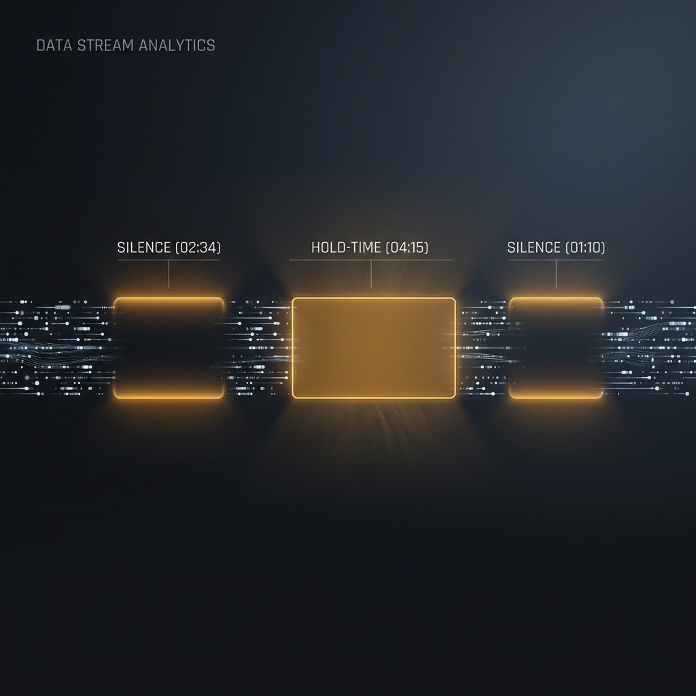

Weekly sentiment trend: what supervisors should act on
A bar chart is useless unless you can name the triggers. Learn how to connect volatility to escalations and QA.
Read articleSearch and filter by what supervisors actually do: alerts, coaching, and outcome reporting.
A bar chart is useless unless you can name the triggers. Learn how to connect volatility to escalations and QA.
Read articlePacing, interruptions, and resolution confidence: the metrics that move fast on the floor.
Read articleHow teams use “negative spike at 2:34” alerts to shorten review time and stop repeat drivers.
Read article
Where pauses happen, why they happen, and which scripts cut the dead air.
Read articleSee how sentiment timelines and coaching flags map to CSAT and AHT.